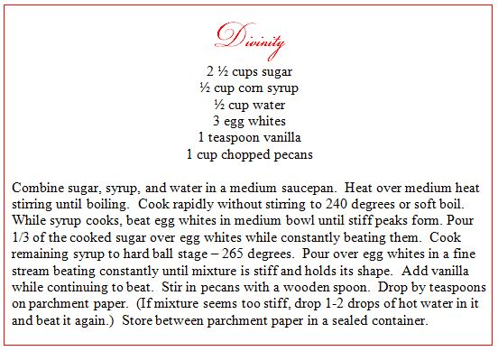
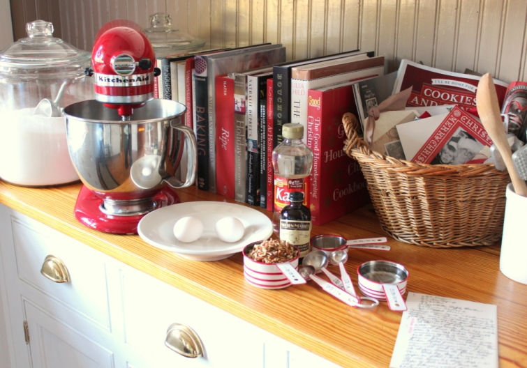

.png)
.PNG)
.PNG)
.PNG)
.PNG)
.PNG)
.JPG)
.JPG)
.PNG)
.PNG)


 When I first started thinking about the recipe that I wanted to share with you in the Christmas in the Kitchen post, I remembered that we had divinity every year during the holidays as I was growing up, but… I didn’t know if all of you would even know what it was. Boy was I mistaken! I couldn’t believe how many of you said that you had also enjoyed it in your childhood. From grandmothers to grandfathers to aunts, it seems that most of you had a fond memory of a relative preparing the sweet confection…and at Christmas! 🙂
When I first started thinking about the recipe that I wanted to share with you in the Christmas in the Kitchen post, I remembered that we had divinity every year during the holidays as I was growing up, but… I didn’t know if all of you would even know what it was. Boy was I mistaken! I couldn’t believe how many of you said that you had also enjoyed it in your childhood. From grandmothers to grandfathers to aunts, it seems that most of you had a fond memory of a relative preparing the sweet confection…and at Christmas! 🙂

My mother made it every year, but I had never tried out the recipe. If I was going to share it with you, I wanted to know how to make it. So my mother came over last week, and she showed me how to cook it. All I knew was that she always said you cannot make it if it is raining. Humidity is bad bad bad for divinity.(We had planned to make it on a Saturday, but of course it rained. So we had to wait until a sunny day.) There are quite a few variations of the recipe, but she calls this Twice Cooked Divinity because the sugar syrup is cooked twice.I mentioned in the last post that we increased the eggs to 3, the vanilla to 1 teaspoon, and the nuts to one cup (one heaping cup. 🙂 ) We started with 2 eggs, but they looked so small, we decided 3 would be better.
You begin by heating the sugar, syrup, and water over medium heat. Stir it until it boils. Then stop stirring, and let it heat to 240 degrees.
While the sugar is cooking, separate the eggs and beat the egg whites until stiff. (I had my mixer on the counter next to the stove.)
Once the sugar syrup reaches 240 degrees, keep the mixer going, and pour 1/3 of the hot sugar syrup over the egg whites.Put the remainder of the sugar syrup back on the stove, and heat it to 265 degrees. Keep the mixer going (on medium speed), and pour the rest of the hot sugar over the egg whites when the mixture reaches 265.
Beat it until the mixture is stiff and holds its shape. Then mix in the vanilla.
At this point, my mother said, Now we have to use a wooden spoon instead of the mixer. So take the bowl out from under the mixer, add the pecan pieces, and mix it all up with a wooden spoon.
Then spread out parchment or waxed paper, and drop the stiff mixture by the teaspoonful. It makes between 50 and 60 pieces.
Both of our boys love divinity, and since they are not living anywhere near here, my mother and I decided we would mail some to them.
So they will soon be getting a tin of the candy, a photo of the two of them from loooooong ago with Santa, and my mother’s handwritten divinity recipe…a taste of Christmas from home. 🙂
And one of you will be getting the 2 cookbooks along with the $25 Williams-Sonoma gift card from last week’s giveaway. There were 350 absolutely wonderful comments. Thank you all. I enjoyed reading them so much! (A few of the comments got placed on the wrong posts thanks to my wonky comment form, but I included them in the pot as well.) Here is the winning number…
Which belongs to this comment in the Talk of the Weekend #10 post.
Congratulations Jennifer! I will be getting in touch with you about your mailing address very soon.
I hope all of you have a wonderful week. If you give the divinity recipe a try, I would love to hear how it turns out!
Until next time….


.PNG)
Hi Kelly, I fell in love with your picture frames and am now on the hunt to buy them locally. I have seen some at Walmart and Michaels but can you please tell me what size you frame is and the size of the picture used inside. The large ones seem to be a common size. I may attempt to cut my own matts out of very thin paper. Thank you so much. Your house is just beautiful.
Forgot to mention, I too have the same mixer. Funny story, I have always wanted a Kitchen Aide mixer but for some reason rationalized that I shouldn’t get one because I probably wouldn’t use it that much. Anyway, so this fall I attended a bridal shower where a young twenty something received a mixer. I left that shower thinking, why does a twenty something own a Kitchen Aide mixer and I don’t. Soon after I bought myself one. It is so easy to use and I have used it sooo much. The lesson here is Life is short so don’t wait around to get yourself a Kitchen Aiide Mixer.
My mother in law always made divinity, but it was not always my favorite to indulge in during the holidays. I would always go for my Aunt’s nut cups, while eyeing the cookie tray. Oh, my mouth is watering as I think of them. Hers were the best I had ever tasted. Unfortunately, she just pasted from cancer this last year. I was able to obtain her recipe, though I don’t feel I could do it justice. How nice that you and your Mom spent a wonderful afternoon in the kitchen and that your boys will have a taste of Christmas past. Love from the heart. The best kind… P. S. I am also drooling over your red Kitchen Aid. Almost bought one this last holiday season. Still contemplating. Are they worth the investment??
Thanks for sharing the recipe!!! Have to try it!
Ok…just finished making your divinity recipe. I am not sure if it is a success or a flop!?! It is sticky but manageable. What is the final texture? I think I need your mom or better I need your mom in your kitchen!!!
——————————————————————–
It is sticky to start with – but it should not be runny. You leave it out on the paper (not covered) to firm up for a few hours – or even a day. It should firm up to the texture of nougat candy.
Good luck!
Kelly
Kelly,
I will be trying your Divinity recipe but I will have to buy a candy thermometer first. I have been wanting to buy one for my kitchen any way. I will let you know how it goes. My Mom will be so delighted if I can get it to turn out. She has tried many times but she says its is always too humid here in Missouri to get it to turn out correctly. Thanks for sharing the recipe and how to pictures. they will help me greatly!
——————————————————————–
Yes, definitely get a candy thermometer Dawn. Your mother’s must not firm up. Perhaps beating it longer would help? Not sure about that – could be the temperature not getting hot enough. I hope yours turns out perfectly!
Kelly
Kelly,
I have to make this! Your photos are just perfect.
I already see the books coming from your blog and I will be rushing out to buy them. I can see Talk of the Kitchen cookbook. I have several titles for you in my head.
I know how happy your boys will be to get that divi you from home.
DiAnne
Thank you for such a detailed recipe! How special to make it with your mom. I hope I get a chance to make it later this week. Time seems to be running out on me to get everything done (haha, I keep seeing more things to make on blogs and Pinterest.) 😛 My husband is planning to take candy to people he works with so I need to finish all of it first. 🙂 My daughter and son-in-law will be here Saturday so I want everything perfect…well, as perfect as can be!! 😉 I know that you know what I am talking about. 🙂 Thank you for all your inspiration! 🙂
Well, I have to admit, I’m not a big fan of divinity, but not only does yours look beautiful, we have matching red mixers! Yippee!
Kelly – I will be making divinity using your mother’s receipt this week. I don’t recall ever making it growing up.
———————————————————————-
I’d love to know how it turns out Julia. Good luck!
Kelly
Just had to say–Thank you for adding link to “The Piano Guys”. They’re new to me. And they’re absolutely Fabulous. After watching/listening to Waterfall I clicked on the link to video of Christmas hymn and just loved it. I think it was titled something like “Over 10,000 hours went into …”
Kelly, I really really appreciate you.
———————————————————————
I am so glad you liked them. They are amazing!!! I appreciate you for reading and leaving sweet comments. 🙂
Kelly
You have inspired me to hunt down my mom’s recipe (probably the same as your mom’s) and see if my DIL will make some. I’m thinking my 92 year old mom would enjoy tasting her favorite Christmas candy again. 🙂 And I might need the source for those red & white striped measuring cups!
———————————————————————
Oh I bet your mom WOULD love it Barbara! It’s yummy. The striped measuring cups were bought on sale around Valentine’s Day at Sur La Table. Love that store!
Kelly
Thank you for the recipe and your beautiful photos! I think I’m one of the few with no divinity associations, so I guess it’s up to me to take up the slack for my family.
Have a great week, Kelly!
——————————————————————-
I hope you try it out Vicki. Be sure you have a good candy thermometer on hand, and it will easy for you!
Kelly
What a fun thing to learn from your mom! It looks delicious! (And, are you surprised that I have your very same red mixer?) My dad just taught me how to make his chocolate peanut butter candy a few weeks ago. He never used a candy thermometer so we cook it until it forms little balls when dropped into a cup of cold water. It just has to “look right”. My college-aged son asked me if I would sometime write down his favorite recipes so I am making him a recipe book for Christmas. I am sending the link to it because it looks like something you would love….red with a little hounds-tooth napkin and plate/with utensils on the front. http://www.crgibson.com/pocket-page-recipe-book-bon-appetit.html#.VI76vbA3OP9t.
———————————————————————-
Not surprised at all that you have the same red mixer! 🙂 I am afraid math girl here has to have the thermometer…I can’t judge it in the cup of cold water. What you are making for your son is what I asked my mother-in-law for many years ago for a wedding present. One of my most used gifts! Your son better appreciate it. It will be a work of art! Love the cute cookbook!
Kelly
My first taste of Divinity was at a Christmas party when I was in elementary school–and I loved it from first taste :}. My mother never attempted to make it :[ She did warn me though that it won’t work if there’s any humidity!
My plan had been to attempt it today but–it’s raining! And that’s good since here in northern CA we’ve been in a drought.
Kelly, l love all that red–makes me happy just looking at pics of your kitchen.
Tell your blog mates that I enjoyed the series on Christmas in the Kitchen. Y’all did a fun and fantastic job.
———————————————————————
So glad you are getting rain, but it does make the candy making difficult. (But you all really needed the rain.) I am glad you are enjoying all the red. It is on major overdose here! LOL I will pass along your comments about the kitchen post to all the other bloggers involved. So glad you enjoyed it!
Kelly
Kelly,
What a fun Christmas memory. I wish I had made divinity with my mom before she passed. I think this recipe looks delicious and relatively easy.
I’m happy that you are feeling better and hope the remaining week+ of the holiday season is filled with fun and magic.
xo,
Karen
P.S. I’m assuming your boys will be home for Christmas!
——————————————————————–
Oh Karen, I wish you had made it with your mom too. It is a delicious treat.
I am doing better and taking it slooow. No tree up nor much of anything else here other than the kitchen and dining area done. My to-do for the week is the outside, and I have done 2 windows and one door. It is progress!
The boys won’t be coming for Christmas because our oldest does not have any time off. Boo hoo. And we are not going there with all that needs to get done at our home. We are using Skype a lot!!
Kelly
Your divinity looks divine!!:) Believe it or not, that was one of the recipes I learned back in Home Economics!! And I did learn it is better to make any kind of candy on a day with low humidity! Thanks for that tip Miss Butler, Home Ec Teacher at Murray County High School!!
———————————————————————–
Wow that was a complicated one to tackle in Home Ec! Your teacher must have wanted you to practice reading a candy thermometer or trying out the stages of candy. 🙂 (It’s a good one for that.)
You should be a pro if you learned it back in high school!
Kelly
Hi Kelly, Thanks for the recipe! I had divinity when I was a kid too – a long time ago, lol. Your kitchen is lovely and you photograph it so well. Love all the red and white.
———————————————————————-
You are more than welcome for the recipe Anne. Thank you for your compliments on the kitchen! This is the perfect time of year for all the red and white.
Kelly